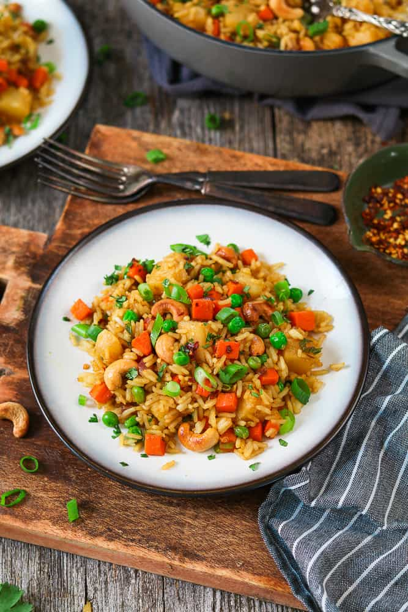

If you dont mind cooking rice, this is an nice easy recipe to follow that will keep you full and on to go!
Ingreidents needed!
- 2 tbsp coconut oil
- 1 small red onion (diced)
- 3 cloves garlic (minced)
- 1 tbsp fresh ginger
- 1 tsp crushed red pepper
- 1 cup carrots (diced)
- 1 1/2 cups pineapple chunks
- 3 cups cooked rice
- 4 spring onions
- 3 tbsp Soy Sauce
- 1 1/2 tsp curry powder
- 1/2 Cup frozen peas
How to make it!
- Whisk the soy sauce and curry powder together. Set aside.
- Heat coconut oil in a large pan or wok over medium heat. Add onions and sauté for 2-3 minutes, until softened.
- Now add the garlic, ginger, red chili pepper flakes and carrots. Sauté 7-9 minutes or until carrots are tender. (* if veggies start to stick, you can add a splash of vegetable broth to deglaze)
- Add the pineapple chunks and sauté until slightly browned, about 4-5 minutes
- Add Soy sauce, rice, peas and green onions. Stir frequently. Taste for seasoning and add more if needed. Cook about 4-5 minutes, until all ingredients are combined and heated through.
- Remove from heat and serve with optional toppings. Enjoy!
Return to Top
Return to home